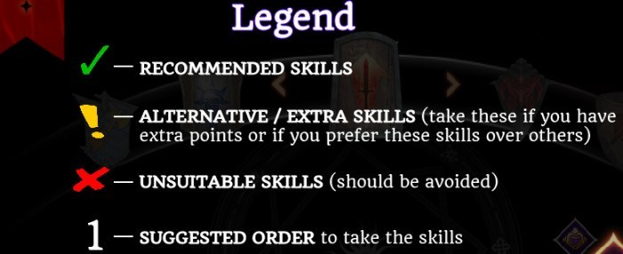
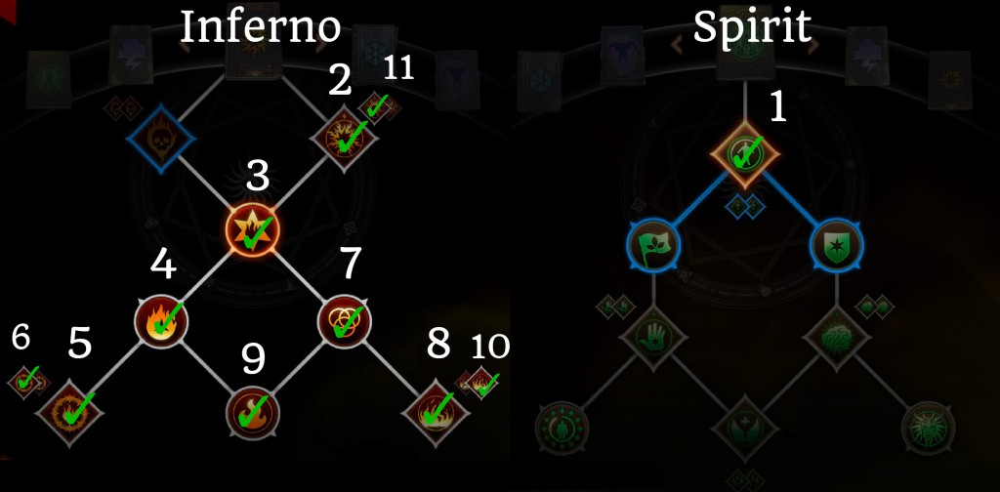
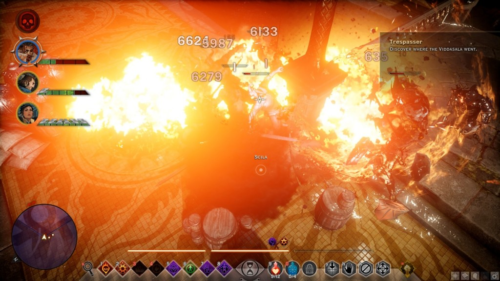
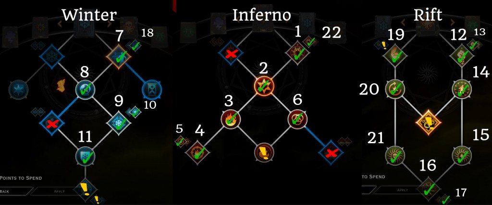
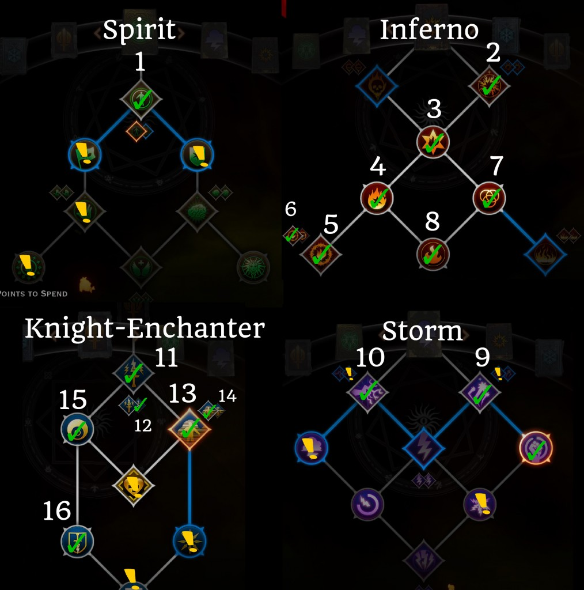
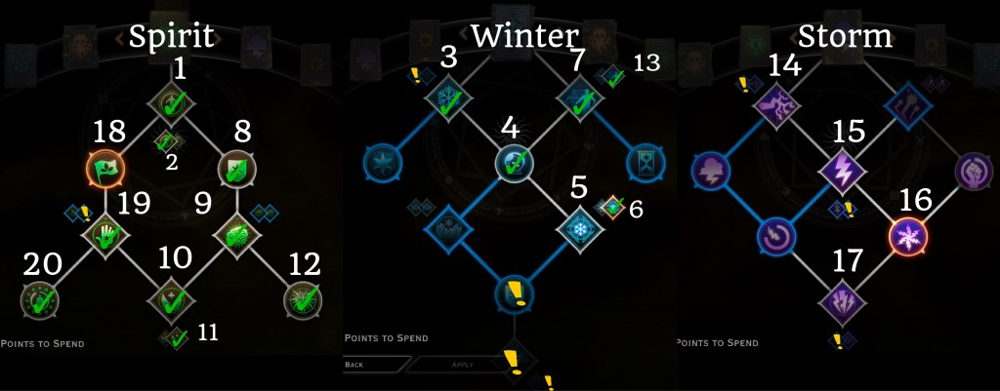
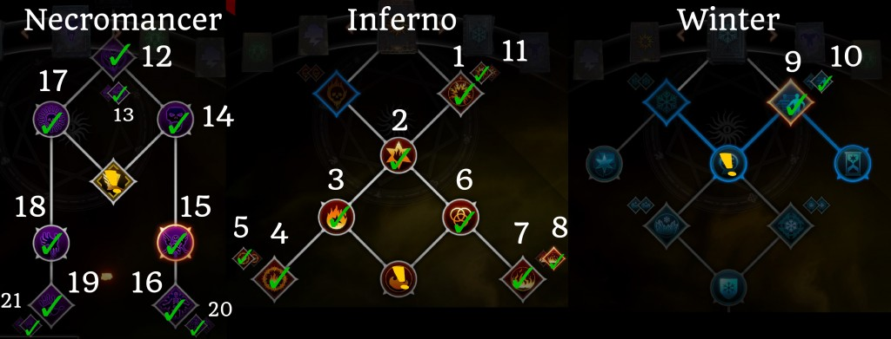

I've re-uploaded DragonInquisition.com's fantastic builds because their site went down and I haven't been able to visit them in some time.
The other builds can be found on their respective pages:
Mage Builds
Looking for effective DA: Inquisition mage builds? You've come to the right place. All of these builds have been tested & played extensively on Nightmare difficulty.

Contents
Elemental Mage Build
Thanks to Malcolm AKA Dorian of House None of Your Business for the build!
With access to 4 different spell schools, this build has high damage and also allows you to support at the same time with barrier and revival. In particular, you have high AOE damage and control because all your skills are AOE, and good mobility and mana regen with upgraded Fade Step. And because you don't need any specialization skills, you can use this build on any one of your mages.
Points Spent: 21+
Spirit: Barrier / Elegant Defense / Guardian Spirit / Mind Blast / Revival / Desperation / Strength of Spirits
Storm: Chain Lightning / Stormbringer/ Gathering Storm / Static Cage
Inferno: Immolate / Flashpoint / Pyromancer / Fire Mine / Flaming Array
Winter: Fade Step / Energizing Step / Winter Stillness / Ice Mine / Chilling Array
{kind=link}
Given that this build takes skills in all 4 mage trees, you have a lot of choice on what to level first and there's no clearcut “best” way. Generally speaking though, I would always start with barrier and then grab the Inferno skills to get upgraded Fire Mine ASAP to boost your damage.
After this you can finish your Spirit skills and pick up revival so you don't have to worry about keeping the party alive. Then you can choose to get either the Storm or Winter skills first, depending on preference. Upgraded Fade Step in particular can be picked up whenever you start having mana issues, and Ice Mine is great if you feel like you're lacking in CC.
Note: If you're playing this build on your Inquisitor, I'd use Mark of the Rift instead of Chain Lightning
Gameplay:
- Keep barrier up at all times
- Prioritize using Fire Mine first, since it is your biggest damage spell. Keep in mind you need to get in close range to make use of the Flaming Array upgrade
- Use Fade Step as a way of generating mana – the more targets you fade through, the more mana you restore
- Use Ice Mine whenever you need reliable CC. You can also use this to generate skill combos, like Ice Mine -> Immolate
- Use Lightning Cage when 3+ enemies are close together
- Immolate is used mostly to generate skill combos, and when other skills are on cooldown
- Use Chain Lightning as a filler DPS spell
- Revival with the Desperation upgrade is AMAZING for damage. Use it whenever 2 or more party members have fallen near each other
Invisible Pyromancer Build
This build requires one specific item to work – the Ring of Doubt, one of the 4 Relics of Thedas items added in Patch 10. It is also a lot more powerful if you have the Trespasser DLC (for the Flaming Array Fire Mine upgrade), but it's viable with the standalone game as well.
Points Spent: 11
Spirit: Barrier
Inferno: Immolate / Wildfire / Flashpoint / Pyromancer / Fire Mine / Flaming Array / Clean Burn / Chaotic Burn / Wall of Fire / Wave of Flame

The basic idea behind the build is that Ring of Doubt gives you stealth when not attacking, and the first spell you use of of stealth will always crit. This works incredibly well with Inferno's Flashpoint passive, which causes the next spell after a critical hit to have no cooldown.
So what you do is get into combat to trigger the ring's stealth effect, use Immolate to trigger Flashpoint, and wait until you stealth again. This allows you to cast Fire Mine twice, and also guarantees that it will crit both times, causing massive damage.
You can easily wipe out whole groups of enemies even on Nightmare difficulty by using this combo. Make sure to wait to restealth every time you cast a spell so that it crits.

For even more damage, keep Barrier up to boost your fire damage with the Chaotic Focus passive, and try to flank your enemies to make use of the ring's +20% Flanking Damage bonus.
This build requires only 11 points, so you can pair it up with any mage specialization!
Jack of All Trades Mage Build
I've been wanting to try a build that doesn't require any specializations for the mage class, and this was the result. This build takes spells in every mage tree (Spirit, Storm, Inferno, and Winter) with the aim of having access to a lot of different tools.
You have some CC, some mobility, some support, access to different elements to help against enemies that are strong/weak against particular schools, and most of all high damage!
Points Spent: 23+
Spirit: Barrier / Elegant Defense/ Guardian Spirit / Peaceful Aura / Dispel / Rejuvenating Barrier
Storm: Energy Barrage / Conductive Current / Static Charge / Static Cage / Lightning Cage / Energy Bombardment
Inferno: Immolate / Wildfire / Flashpoint / Pyromancer / Fire Mine / Flaming Array / Clean Burn / Chaotic Focus
Winter: Winter's Grasp / Fade Step / Energizing Step

You can take Guardian Spirit later in the game if your mage has no survivability problems, and also experiment with taking Energizing Step (Fade Step upgrade) earlier if you're having mana problems. For your 8th skill slot, you can either use Dispel (great for things like dispelling Rifts and barriers) or Mark of the Rift.
Key Skill interactions:
- Rejuvenating Barrier + Energizing Step help with mana regen since this build is mana-intensive.
- Static Cage's Lightning Cage skill upgrade adds additional lightning damage whenever a target inside takes damage. This makes Fire Mine and Energy Barrage excellent spells to combo together with Static Cage.
- Chaotic Focus + Barrier to power up your Fire Mine to do more damage.
Gameplay:
- Before engaging in combat, always put barrier up, so that you get both the mana regen bonus, and the Chaotic Focus bonus
- Begin by putting down Static Cage on the area where enemies are most clumped up. Ideally you want to do this from close range, so that you can immediately put up 3 fire mines with the “Flaming Array” Fire Mine upgrade toggle
- Follow up with Energy Barrage or Immolate, depending on the number of enemies inside the cage
- Use Fade Step with the Energizing Step skill upgrade whenever you drop low on mana – you get 25% of your mana back for every enemy you pass through
- Immolate is used mostly as filler when Static Cage / Fire Mine / Energy Barrage are on cooldown
- Use Winter's Grasp when you need a reliable crowd control spell for a single target, or when you want to perform an easy combo (Winter's Grasp -> any detonator skill). I would avoid the skill upgrade unless you have another party member with a freezing ability, in which case the “Winter's Ruin” upgrade is a good investment (1,000% weapon damage if WG is cast on a target that is already frozen)
- Recast Barrier throughout fights to negate damage and help mana regeneration
In terms of crafting Masterworks for this build, you have two options: if you still have mana issues, try a Masterwork like Fade-Touched Plush Fustian Velvet (reduces ability cost by 10%); otherwise go for a pure damage Masterwork. Check out the full list of Masterworks here.
AOE Rift Mage Build
This build is all about AOE damage and control. The Winter, Inferno, and Rift trees offer the most AOE capability for mages, so these 3 will be our key skill groups, offering unrivaled control and damage against multiple enemies.
Points Spent: 23+
Inferno Tree: Immolate / Wildfire / Flashpoint / Clean Burn / Pyromancer / Fire Mine / Flaming Array
Winter Tree: Fade Step / Energizing Step / Winter Stillness / Ice Mine / Chilling Array / Ice Armor
Rift Tree: Stonefist / Shatterstone / Encircling Veil / Veilstrike / Restorative Veil / Smothering Veil / Twisting Veil / Pull of the Abyss / Devouring Veil

This build can be finalized in 2 different ways: by either going for Blizzard + Ice Storm upgrade, or Veilstrike + Punching Down upgrade. I personally prefer taking Veilstrike so that I have 2 skills that cause the weakness debuff (Veilstrike & Stonefist), which most of the passives in Rift rely on.
For your focus skill, you can either take Firestorm or Mark of the Rift, depending on whether you're using this build on Solas or your Inquisitor.
Key Ideas:
- High AOE damage
- Multiple debuffs to slow, freeze, and weaken enemies
- High Mana regen through Restorative Veil and Energizing Step
- Powerful skill combinations: Pull of the Abyss -> Fire Mine; Ice Mine -> Stonefist/Immolate, etc
- Staying close to enemies to make use of Ice Armor (50% damage reduction) and to cast Fire and Ice Mine with the Array skill upgrades
Gameplay:
- If you go for the upgraded Veilstrike version of this build, I'd suggest either starting fights with Veilstrike, or casting it after Pull of the Abyss to apply the weakness debuff, which gives you bonus damage, restores mana, and reduces enemy damage
- Main damage combo: Pull of the Abyss (Devouring Veil upgrade) -> Fire Mine
- Veilstrike/Stonefist used to apply the weakness Debuff
- Use Ice Mine (Chilling Array upgrade) as your main CC tool, and to perform the Freeze -> Stonefist combo
- Fade Step with Energizing Step upgrade for quick mana regen
- Immolate used as a filler spell for AOE
Knight-Enchanter Mage Build
With the recent changes to Spirit Blade, the Knight-Enchanter specialization has changed quite significantly, but it is still powerful. Now, instead of using Spirit Blade all the time, you want to use it only when you have high Spirit Blade charges (90+), as shown by the tooltip above your skills bar.
Using Spirit Blade will expend the charges, so you will need to build them back up every time. As a result of these changes, this updated build focuses on rapidly building Spirit Blade charges.
Points Spent: 16+
Spirit: Barrier
Inferno: Immolate / Flashpoint / Clean Burn / Pyromancer / Fire Mine / Flaming Array / Chaotic Focus
Storm: Energy Barrage / Chain Lightning
Knight-Enchanter: Spirit Blade / Amplified Blade / Combat Clarity / Fade Cloak / Decloaking Blast / Fade Shield

To build charges with the new spirit blade, you simply need to deal damage with a spell, or a normal staff attack. Each instance of damage will give you 5 charges (10 with the Amplified Blade upgrade) , up to a total of 99 charges; this is why skills like Energy Barrage are absolutely required for this build, since it attacks multiple times.
Note: you can vary this build in 2 ways – by going for Chain Lightning for your 10th skill point, or by taking Fade Step for more mobility instead; this is up to personal preference. I take Chain lightning because it attacks multiple times (up to 6 with the upgrade) and complements Energy Barrage for quickly generating Spirit blade charges.
The basic idea behind this build is to deal lots of magic damage with your spells, while also building up charges quickly to use Spirit Blade for massive damage.
Basic Gameplay:
- Activate Barrier either yourself, or from another mage.
- Start off the fight with a cast of Energy Barrage to build up your Spirit Blade charges to 99 (or close to 99), and get into melee range
- Cast Spirit Blade once to use up the charges and deal massive damage – try to aim it in a way that hits multiple enemies
- Use Fire Mine (with Flaming Array upgrade), ideally when you have a full barrier bar to take advantage of the Chaotic Focus passive
- After this, continue using damage spells (Fade Cloak, Immolate, etc) with priority given to Energy Barrage to continue dealing damage and building charges
For your 8th ability, you can either take Resurgence (Knight-Enchanter Focus skill) or use Mark of the Rift if you are playing this build on your Inquisitor. It is really up to you which skill you prefer – Resurgence is better for helping your party survive, while Mark of the Rift is better for pure damage.
To conclude, you will notice that the core build requires only 16 points; I decided to make it as accessible as possible since KE is such a popular spec. Because of this, you have lots of ways to spend your later points (marked by the yellow exclamation mark in the build screenshot above).
If you're looking for more damage, I would take the optional Storm skills ; if you're struggling with mana/survivability, I'd take the optional Spirit points instead.
Support + Combo Mage Build
This build is all about supporting your party, both to keep them alive, and to set up combos so they can deal high damage. As such, we will be taking as many mage combo setup skills as possible, like Ice Mine and Static Cage. I prefer to use this build on Solas and leave the AI to control it, but you can use it with any mage companion (or your Inquisitor).
Points Spent: 20+
Spirit Tree: Barrier / Elegant Defense / Guardian Spirit / Mind Blast / Revival / Desperation / Strength of Spirits / Peaceful Aura / Dispel / Rejuvenating Barrier
Winter Tree: Winter's Grasp / Fade Step / Energizing Step / Winter Stillness / Ice Mine / Chilling Array
Storm Tree: Chain Lightning / Lightning Bolt / Static Charge / Static Cage

When leveling with this build, you have lots of freedom with which skills to take first. For example after taking barrier, you can take the Storm skills before Winter, or take all the Spirit skills before Winter/Storm. However, I would recommend building it in the above way to have a solid mix of both support and CC skills as you level up, rather than too much of one thing.
Note: take Mind Blast off your action bar so you can use your 8 most important skills.
Key Ideas:
- Protect the party with barrier, and cast Revival when needed
- cast 4 different CC spells to set up combos – improved Ice Mine, Static Cage, Lightning Bolt, Winter's Grasp
- Useful utility skills like Dispel and mana regeneration when barrier is active
Gameplay:
- Keep barrier up before and during fights
- use Revival with the Desperation upgrade – this upgrade gives the revived party member a 200% damage and 50% attack speed boost for 10 seconds before they fall unconscious again, which is well worth it; you can manually revive afterwards as well
- Use Static Cage as your main AOE spell for both damage and the paralyze debuff
- Use Ice Mine with Chilling Array upgrade as your main CC tool – when aimed well, you can freeze up to 3 targets at once
- Use Winter's Grasp when you need to set up a controlled combo on a single target
- Lightning Bolt is used mostly as a filler spell, and can be swapped out for Chain Lightning if desired
Fire Necromancer Mage Build
Pairing Necromancer skills together with Inferno is the best choice, because fire spells cause burning (another DoT) and Wall of Fire benefits from the 15% bonus damage to panicked enemies passive in the Necro tree.
Points Spent: 21+
Winter: Fade Step / Energizing Step
Inferno: Immolate / Wildfire / Flashpoint / Pyromancer / Fire Mine / Flaming Array / Clean Burn / Wall of Fire / Wave of Flame
Necromancer: Everything except Haste (optional skill)

If you have the Trespasser DLC, you definitely want to pick up fade step with the new energizing step upgrade to take care of mana issues, since Necromancer spells cost a lot of mana. You also want to pick up the new upgrades for Fire mine (Flaming Array) and Wall of Fire (Wave of Flame).
For Spirit Mark, you can try out using either skill upgrade; they're both buggy at the moment so I didn't see either one of them being stronger.
For your Focus skill take Haste only if you're doing this build on Dorian; otherwise, Mark of the Rift is superior.
Basic Gameplay
- Fire Mine is used as your main DPS spell – nothing new here, since it is the highest DPS spell for mages
- Keep your Spirit Mark and Walking Bomb dots up as much as possible; try to time them so that the target dies before they end, so you benefit from their secondary effects – the bomb spread effect from Virulent, and the Spirit Mark's Charm effect
- Use Horror as much as possible; with the new Terror skill toggle it is much more useful since it causes enemies to remain panicked until they take damage equal to 25% of their hp
- Use Wall of Fire to panic multiple enemies, usually when Horror is on cooldown
- Use Immolate whenever your other DPS skills are on cooldown, or to activate skill combos
Extra Points:
If you have extra points to spend after completing the basic build, consider these options:
- Picking up barrier to combo together with the Chaotic Focus passive in fire to be able to empower your fire mine, as well as the Restorative Veil passive to help with mana issues
- Picking up the passive skills in Storm – most notably Conductive Current, Stormbringer, and Static Charge – to further increase your damage at no additional mana cost